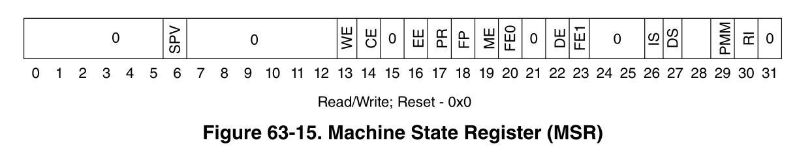
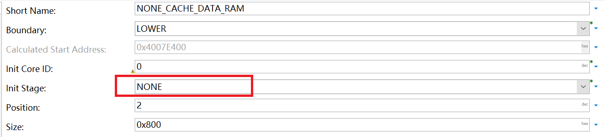
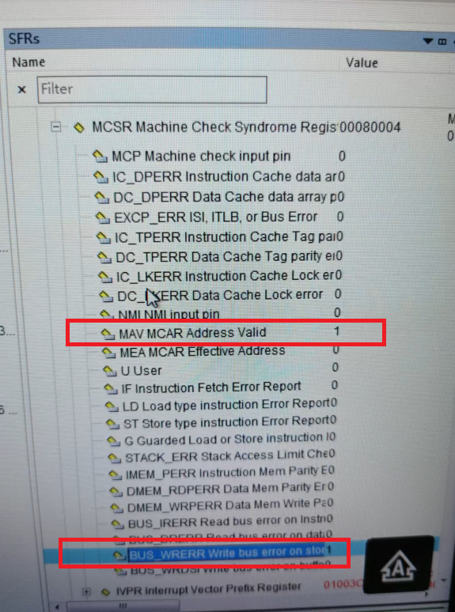

ECC错误
ECC错误分析¶
MCU内部SRAM的值在复位后是随机的，因此，数据和校验位可能包含任意值。很可能对任何地址的第一次读取尝试都会产生不可纠正的 ECC 错误。因此 SRAM 必须在上电后初始化。通常通过对SRAM批量写值实现，而写操作必须为4字节或8字节方式，从而将ECC定义完成。否则，较小大小的写入访问会导致读取-修改-写入，并出现另一个 ECC 错误。
基于IVOR1的异常处理¶
在e200内核中，IVOR1(machine check)异常处理可以表征多位ECC错误。当MSR[ME]=1时，machine check相关的异常可内核捕获。
相关寄存器¶
以下几个寄存器可用于详细分析异常出现时的场景。
Machine State Register (MSR)¶
MSR寄存器保存了处理器的状态。e200z4204n3 MSR寄存器各位如下图所示：

- bit6 SPV: Signal Processing Extension Unit 使能位，置位时处理器可执行SPE APU vector instructions。对于e200z4204n3内核，硬件上不支持该单元，如果尝试执行相关指令，则产生非法指令异常。
- bit16 EE:外部中断使能位，该中断统一处理所有的内部外设中断。
- bit19 ME:机器检查异常使能位。
Machine Check Syndrome Register (MCSR)¶
MCSR寄存器可以区分不同机器检查异常的来源。异常服务处理函数应当分析异常的根本原因。
- 读取 ECC 损坏的数据集引起的错误，置位MCSR[MAV, LD, BUS_DRERR]
- 写入受 ECC 多位错误影响的区域引起的错误，置位MCSR[MAV, LD, BUS_DRERR, BUS_WRERR]
- 尝试执行受 ECC 多位错误集影响的指令导致的错误， 置位MCSR[MAV, IF, BUS_IRERR]
- cache行填充引起的错误（当该行内有受ECC多位错误影响的数据时）置位MCSR[MAV, BUS_DRERR]或MCSR[MAV, BUS_IRERR]
MCSR[MAV] 指明了MCAR寄存器中的地址是否被硬件更新。当该位被显式地写1清零后，下一次的地址更新才能继续。
Machine Check Address Register (MCAR)¶
当MCSR[MEA]=1时， MCAR寄存器的值有效地址。当MCSR[MEA]=0时， MCAR寄存器的值为物理地址。这些地址标明当机器检查异常发生时的位置。
在异常发生前，将MCSR[MAV]清零，MCAR的地址值才有效。
Machine Check Save/Restore Register 0 (MCSRR0)¶
该寄存器保存了导致异常时的指令地址，在异常处理结束时，rfmci指令将该寄存器的值作为返回值(PC指针)。
Machine Check Save/Restore Register 1 (MCSRR1)¶
该寄存器保存了导致异常时的MSR寄存器值。
异常处理函数实现¶
异常向量表及其内容实现在Os_Hal_Entry_Lcfg.c中，内容如下所示，一共定义了12个异常处理handle。
1 2 3 4 5 6 7 8 9 10 11 12 13 14 15 16 17 18 19 20 21 | #define OS_START_SEC_EXCVEC_CORE0_CODE
#include "Os_MemMap_OsSections.h"
OS_HAL_CODE_SECTION(OS_EXCVEC_CORE0_CODE)
Os_Hal_Asm(" .globl OS_EXCVEC_CORE0_CODE");
Os_Hal_Asm("OS_EXCVEC_CORE0_CODE:");
Os_Hal_CoreException(Os_Hal_Exception_Unhandled_0)
Os_Hal_CoreException(Os_Hal_Exception_MachineCheck_MCSRR)
Os_Hal_CoreException(Os_Hal_Exception_Data)
Os_Hal_CoreException(Os_Hal_Exception_Instruction)
Os_Hal_CoreException(Os_Hal_Exception_ExternalInterrupt)
Os_Hal_CoreException(Os_Hal_Exception_Unhandled_5)
Os_Hal_CoreException(Os_Hal_Exception_Program)
Os_Hal_CoreException(Os_Hal_Exception_Unhandled_7)
Os_Hal_CoreException(Os_Hal_Exception_Trap)
Os_Hal_CoreException(Os_Hal_Exception_Unhandled_9)
Os_Hal_CoreException(Os_Hal_Exception_Unhandled_10)
Os_Hal_CoreException(Os_Hal_Exception_Unhandled_11)
#define OS_STOP_SEC_EXCVEC_CORE0_CODE
#include "Os_MemMap_OsSections.h" /* PRQA S 5087 */ /* MD_MSR_MemMap */
|
异常处理函数的实现在Os_Hal_Core.c中，其中Os_Hal_Exception_MachineCheck_MCSRR如下：
1 2 3 4 5 6 7 8 9 | OS_HAL_OS_CODE_SECTION()
OS_HAL_BYTE_ALIGN_4;
Os_Hal_Asm(" .globl Os_Hal_Exception_MachineCheck_MCSRR");
Os_Hal_Asm("Os_Hal_Exception_MachineCheck_MCSRR:");
Os_Hal_Exception_Save_Context_Asm() // 保存异常时程序运行的上下文在全局变量OsCfg_Hal_Context_OsCore0_ExceptionContext中
Os_Hal_Exception_Save_MCSRR_Asm() // Save MCSRR0 and MCSRR1 in Pc and Msr
Os_Hal_Exception_Clear_MCSR()
Os_Hal_Exception_Memory_Handler_Asm() //调用Os_Hal_Exception_Memory_Handler
Os_Hal_Exception_Resume_Context_Asm() //异常处理结束，恢复上下文
|
Os_Hal_Exception_Memory_Handler处理函数在Os_Hal_Entry.c中。
ME异常实例¶
 如上图所示，在vlinkgen模块中配置特殊的RAM块时，错误的没有选择该块的初始化阶段，则该块默认不初始化。
后续分配在该块的var group，在启动代码的初始化阶段时，由于读取-修改-写入操作，产生了ECC错误，但由于MSR寄存器的ME使能位未置位，出现异常时，并不会立即出发异常处理。
以上操作在BrsMainStartup.c文件的Brs_PreMainStartup函数中的Brs_MemoryInit(&vLinkGen_Init_One_GroupsSet, coreID)这一步操作。
所以通过调试器，在该步骤运行后，查看相关寄存器，如MCSR，MCSRR0，MCSRR1寄存器。这些寄存器有出现异常时的标志信息和导致异常的ram地址信息。具体值如下：

Os_Hal_Core.c文件的Os_Hal_CoreInit函数中，会通过Os_Hal_WriteMSR写MSR寄存器，之后马上触发异常处理。